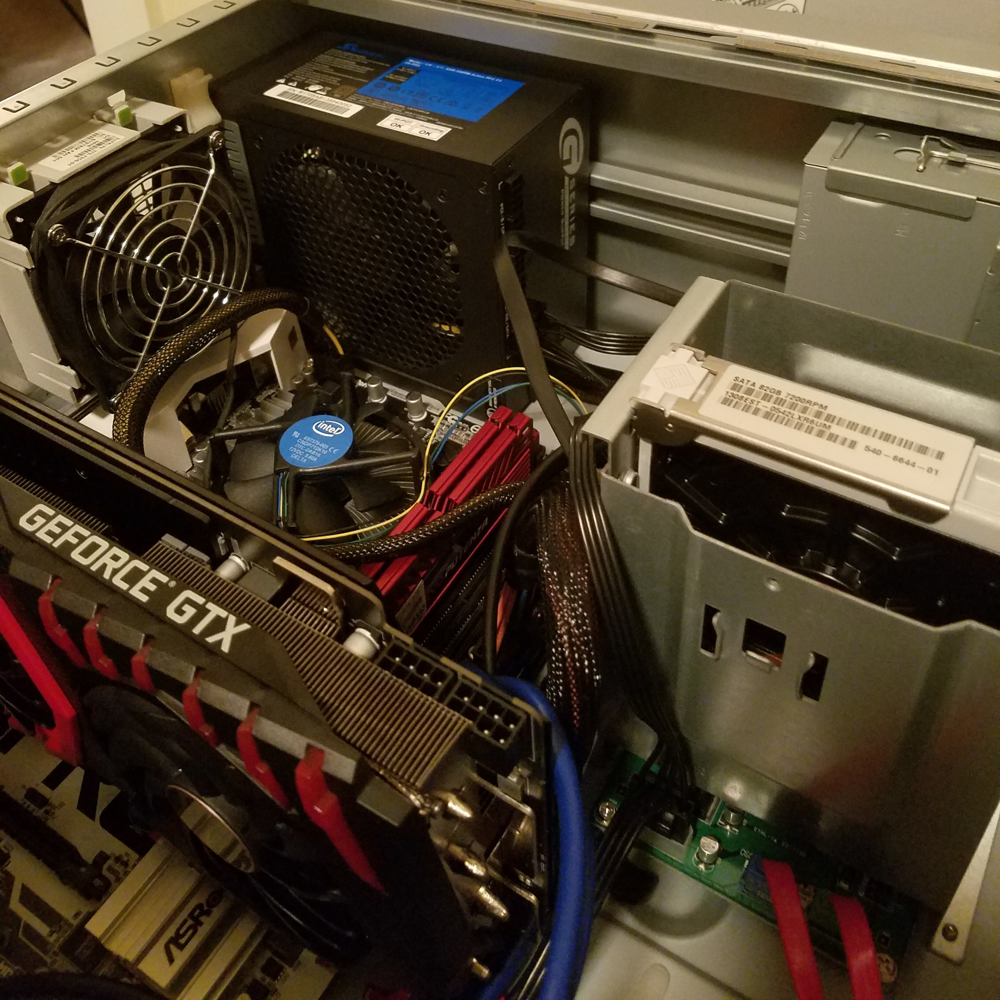

"I’m familiar with building desktops, workstations, and laptops. I have a wealth of experience with various mobile device platforms such as iOS, Android, and Windows. Software platforms aside, the idiosyncrasies that differentiate each hardware platform provides unique experiences I have personally leveraged, assembled, dissassembled, and repurposed."
Custom Workstation




Internals Specification
- CPU: Intel - Core i5-7500 3.4Ghz Quad-Core Processor
- GPU: NVIDIA GeForce GTX 1080Ti - 11GB 352-Bit GDDR5X
- Memory: 16GB DDR4
- Storage: 500GB SSD
- PSU: 550W
- Case: Vintage Sun Ultra 20 Workstation
Workspace
- Monitor 1: Dell - 24" 4K Display - (P2415Q)
- Monitor 2: *Vintage* Sun Microsystems - 24" LCD Monitor (365-1434-01)
- Projector: Optoma HD141X
- Mechanical Keyboard: Azio Retro Classic (Clasic Onyx)
- Optical Mouse: Microsoft Optical Wheel Mouse (N71-00005)
Laptop
- MacBook Pro (Retina, 13-inch, Early 2015)
- CPU: 2.7GHz Intel Core i5
- GPU: Intel Iris Graphics 6100 1536MB
- Memory: 8 GB 1867MHz DDR3
- Storage: 256GB SSD